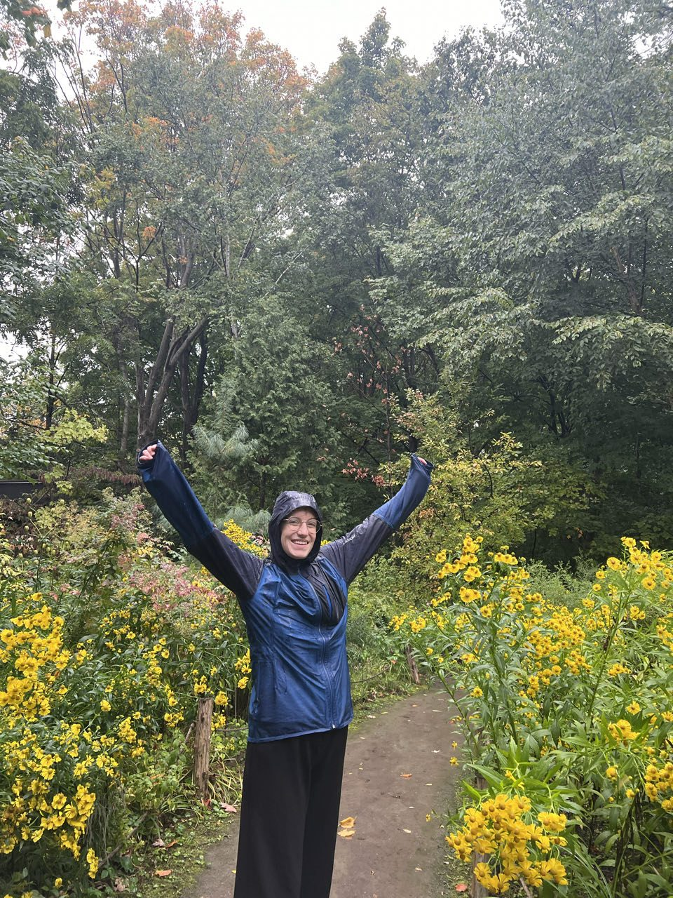
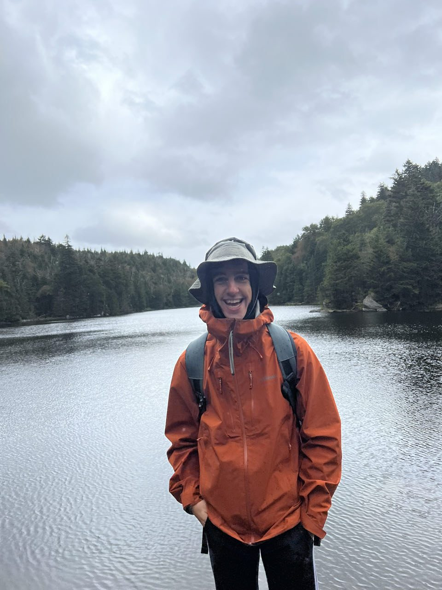
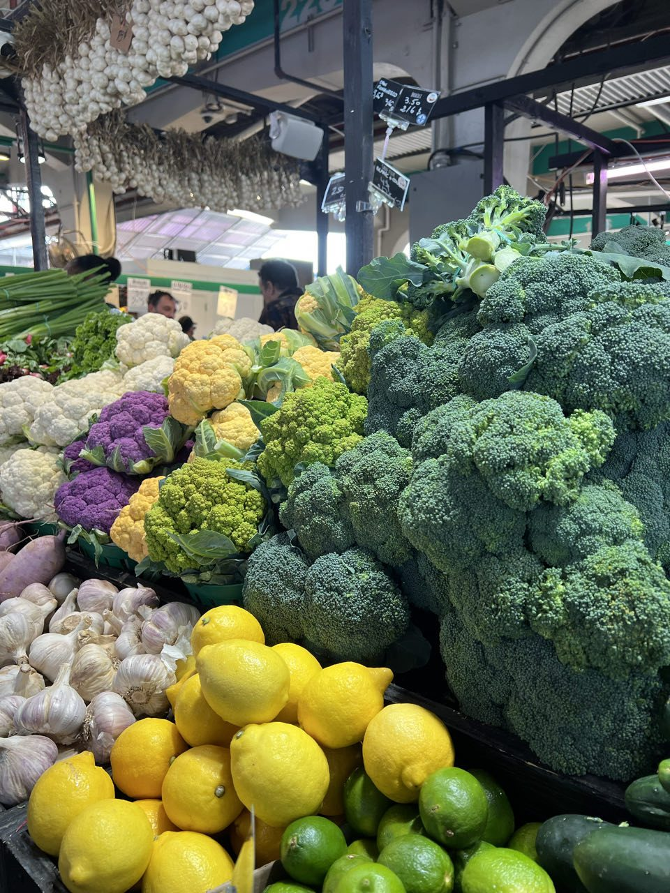

Étape 1 · Ville & culture
Installation à Montréal
Premiers jours d'installation, sous la pluie battante : visite du jardin botanique, entre jardin japonais, jardin des premières nations et un bonsaï de ginkgo qui n'est pas sans rappeler la France. Direction ensuite le parc du Sutton, à peine à 15 minutes de la frontière américaine, pour une première vraie randonnée dans les Cantons-de-l'Est.
Découverte aussi du marché Jean-Talon, le plus connu de Montréal, dans le quartier du même nom : étals de fruits et légumes colorés, friperies, et bonnes affaires en pagaille pour équiper le nouveau chez-soi avant l'hiver.


